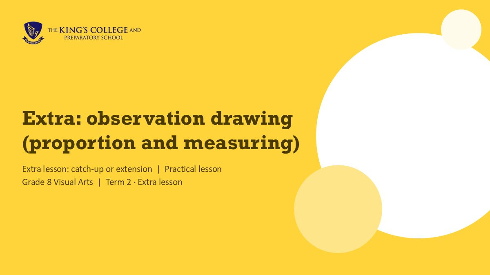

Term 2 · Lesson 2 · Practical lesson
Drawing a textured object
Start here
Today I will
- Today I will choose marks that suit a rough texture
- Today I will build value in layers
- Today I will keep my highlights while I render
Think first
Look closely at this crumpled paper. How many different greys can you see?
Words to know
- Rendering
- Drawing a subject carefully with shading and detail so its surface looks real.
- Texture
- How a surface feels, or looks as if it would feel.
- Layering
- Building tone gradually with several light layers.
- Highlight
- The brightest spots, where light hits the surface most directly.
Slides

Videos
Notes
Rendering rough texture: choosing marks, layering value, keeping highlights.
Rendering rough texture
- Outline the big shape: Light lines first; check the proportions.
- Map the parts: Lightly mark the repeated parts: scales, ridges, creases.
- First layer: A light, even layer of tone over everything except the highlights.
- Build the darks: Add layers in the deepest gaps and shadows with 4B and 6B.
- Sharpen: Crisp edges and small dark accents make the texture pop.
Choosing your marks
| Surface | Good marks |
|---|---|
| Pine cone scales | Curved shapes with a dark shadow under each scale. |
| Bark | Long, broken vertical lines and deep dark cracks. |
| Shell | Curved lines following the ridges; smooth blending between them. |
| Crumpled paper | Flat planes of tone with sharp edges at the creases. |
Remember
Texture lives in the shadows: build them slowly, and save the light.
Practical
You need: Pencils (HB to 6B), blending stump, eraser, textured object, journal
Observation drawing of a textured object
- Draw an arrow to show where the light comes from.
- Draw the object large and lightly, checking its proportions.
- Map the repeated parts of the texture.
- Add a light first layer, leaving the highlights white.
- Build the darks in layers.
- Finish with sharp dark accents and the cast shadow.
Test yourself
- What does layering mean?
- Why should you not blend everything on a textured object?
- Name one mark that suits bark.
Show answers
1. Building tone gradually with several light layers. 2. Blending makes the surface look smooth and the texture disappears. 3. Long broken lines, or deep dark cracks.
Finished early?
How many greys?
Train your eye to see more tones in a rough surface.
- Look closely at one small area of your textured object.
- Draw a strip of boxes and shade one box for every different grey you can see in that area.
- Try to find at least five.
- Write which shading mark you would use for the darkest grey.